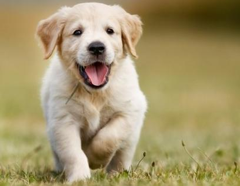

Le chien (Canis lupus familiaris) est la sous-espèce domestique de Canis lupus, un mammifère de la famille des Canidés (Canidae), laquelle comprend également le loup gris et le dingo, chien domestique redevenu sauvage.
Le chien est la première espèce animale à avoir été domestiquée par l'Homme pour l'usage de la chasse dans une société humaine paléolithique qui ne maitrise alors ni l'agriculture ni l'élevage. La lignée du chien s'est différenciée génétiquement de celle du loup gris il y a environ 100 000 ans, et les plus anciens restes confirmés de canidé différencié de la lignée du loup sont vieux, selon les sources, de 33 000 ans, ou de 12 000 ans, donc antérieurs de plusieurs dizaines de milliers d'années à ceux de toute autre espèce domestique connue. Depuis la Préhistoire,
le chien a accompagné l'homme durant toute sa phase de sédentarisation, marquée par l'apparition des premières civilisations agricoles.
C'est à ce moment qu'il a acquis la capacité de digérer l'amidon, et que ses fonctions d'auxiliaire de l'homme se sont étendues. Ces nouvelles fonctions ont entrainé une différenciation accrue de la sous-espèce et l'apparition progressive de races canines identifiables. Le chien est aujourd'hui utilisé à la fois comme animal de travail et comme animal de compagnie. Son instinct de meute, sa domestication précoce et les caractéristiques comportementales qui en découlent lui valent familièrement le surnom de « meilleur ami de l'Homme ».
Cette place particulière dans la société humaine a conduit à l'élaboration d'une règlementation spécifique. Ainsi, là où les critères de la Fédération cynologique internationale ont une reconnaissance légale, l'appellation chien de race est conditionnée à l'enregistrement du chien dans les livres des origines de son pays de naissance. Selon le pays, des vaccins peuvent être obligatoires et certains types de chien, jugés dangereux, sont soumis à des restrictions. Le chien est généralement soumis aux différentes législations sur les carnivores domestiques. C'est notamment le cas en Europe, où sa circulation est facilitée grâce à l'instauration du passeport européen pour animal de compagnie.